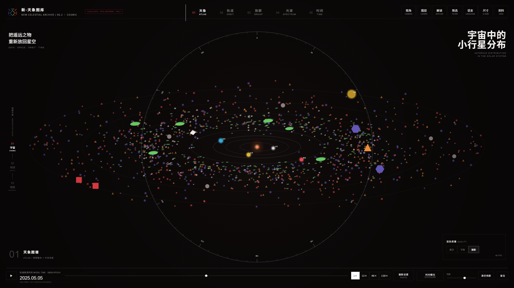

← 返回主页 BACK TO HOME
07 / 17
数据可视化 · 交互网页 / 2026
已完成
新-天象图库
NEW CELESTIAL ARCHIVE
围绕陨石建立的三尺度交互视觉档案：从太阳系小天体的轨道与族群，进入地球上的陨石记录与撞击结构，再继续放大到矿物、晶系与透明晶体。

01 / OVERVIEW
把同一主题在宇宙、地球与物质之间连续缩放。
项目将原有信息图与作者制作的八晶体 STL 模型转化为可交互网页。宇宙尺度组织小天体的轨道、族群与光谱；地球尺度以 45,716 条历史记录呈现坠落、发现与分布；物质尺度通过 WebGPU 实时渲染八类晶体，并模拟透光、折射与色散。
- 年份 / YEAR
- 2026
- 类型 / TYPE
- 交互数据可视化
- 工具 / TOOLS
- WebGPU · JavaScript · TypeScript · WGSL · STL
- 角色 / ROLE
- 视觉设计 · 交互设计 · 前端开发
02 / THREE SCALES
15 SCREENSHOTS